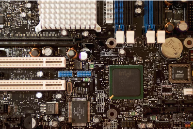
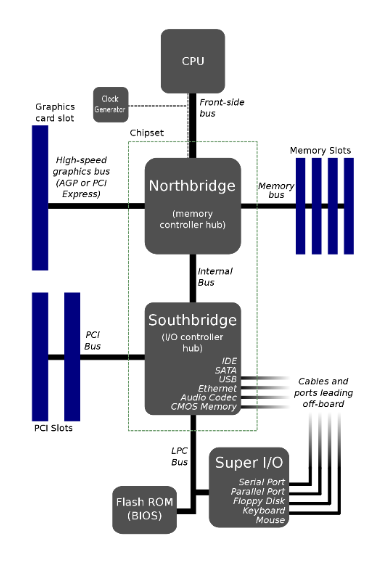
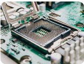
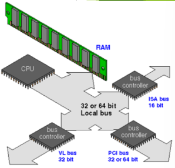
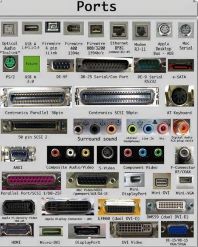
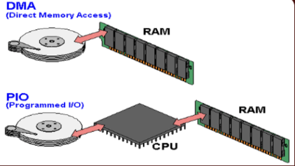
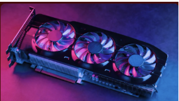
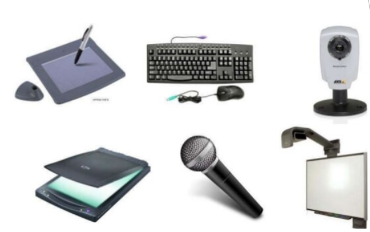
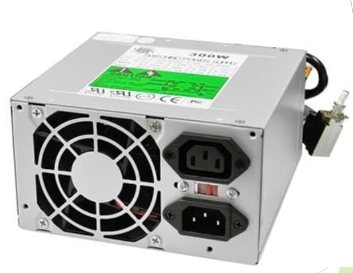
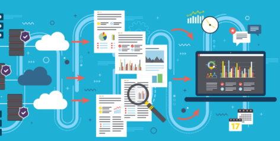

REGRESAR A LA PAGINA PRINCIPAL

Un chipset (traducido como circuito integrado auxiliar) es el conjunto de circuitos integrados diseñados con base en la arquitectura de un procesador (en algunos casos, diseñados como parte integral de esa arquitectura), permitiendo que ese tipo de procesadores funcionen en una placa base. Sirven de puente de comunicación con el resto de componentes de la placa, como son la memoria, las tarjetas de expansión, los puertos USB, ratón, teclado, etc.
Funcionamiento
-El chipset es quien hace posible que la placa base funcione como eje del sistema, dando soporte a varios componentes e interconectándolos de forma que se comuniquen entre ellos haciendo uso de diversos buses.
-Es uno de los pocos elementos que tiene conexión directa con el procesador.
-Gestiona la mayor parte de la información que entra y sale del bus principal, del sistema de video y muchas veces de la memoria RAM.
-Esquema de arquitectura abierta que establece modularidad: el chipset debe tener interfaces estándar para los demás dispositivos.
Northbridge
Se usa como puente de enlace entre el microprocesador y la memoria. Controla las funciones de acceso hacia y entre el microprocesador, la memoria RAM, el puerto gráfico AGP o el PCI-Express de gráficos, y las comunicaciones con el puente sur.
Southbridge
Controla los dispositivos asociados como son la controladora de discos IDE, puertos USB, SATA, RAID,puertos infrarrojos, disquetera, LAN y una larga lista de todos los elementos que podamos imaginar integrados en la placa madre. Es el encargado de comunicar el procesador con el resto de los periféricos.

La unidad central de procesamiento (siglas en inglés Central Processing Unit) es el hardware dentro de una computadora u otros dispositivos programables. Su trabajo es interpretar las instrucciones de un programa informático mediante la realización de las operaciones básicas aritméticas, lógicas y externas (provenientes de la unidad de entrada/salida). Su diseño y avance ha variado notablemente desde su creación, aumentando su eficiencia y potencia, y reduciendo aspectos como el consumo de energía y el costo.

Sus componentes son:
Unidad Aritmetica Logica ALU:Realiza operaciones matemáticas y lógicas.
Unidad de Control(CU):Dirige el tráfico de información entre los registros del CPU y conecta con la ALU las instrucciones extraídas de la memoria.
Registros Internos:
No accesibles(de instrucción, bus de datos y bus de dirección)
Accesibles de uso específico(contador programa, puntero pila, flags,etc) o uso general.
-El controlador de bus se encarga de la frecuencia de funcionamiento y las señales de sincronismo, temporización y control. Está ubicado en un chip de la placa base.
-Es la vía a través de la cual se van a enviar y recibir todas las comunicaciones (internas y externas) del sistema informático.
-El bus solamente es un dispositivo de transferencia de información.

-Un puerto E/S es un enchufe en una computadora al que se conecta un cable.
-El puerto conecta la CPU a un dispositivo periférico a través de una interfaz ya se de hardware o una red.
-Es un punto de conexión que actúa como interfaz entre la computadora y dispositivos externos.
-Hay dos tipos de puertos: Internos y Externos.
Puertos
Puerto Serial:Los puertos seriales transmiten datos secuencialmente un bit a la vez. Por lo tanto, solo necesitan un cable para transmitir 8 bits. Sin embargo, también los hace más lentos. Los puertos serie suelen ser conectores macho de 9 o 25 pines. También se conocen como puertos COM (comunicación) o puertos RS323C.
Puerto Paralelo:Los puertos paralelos pueden enviar o recibir 8 bits o 1 byte a la vez. Los puertos paralelos vienen en forma de pines hembra de 25 pines y se utilizan para conectar impresoras, escáneres, unidades de disco duro externas, etc.
Puerto USB:USB son las siglas de Universal Serial Bus. Es el estándar de la industria para la conexión de datos digitales de corta distancia. El puerto USB es un puerto estandarizado para conectar una variedad de dispositivos como impresora, cámara, teclado, altavoz, etc.
Puerto PS/2:PS/2 son las siglas de Personal System/2. Es un puerto estándar hembra de 6 pines que se conecta al cable mini-DIN macho. IBM introdujo PS/2 para conectar el mouse y el teclado a las computadoras personales. Este puerto ahora está casi obsoleto, aunque algunos sistemas compatibles con IBM pueden tener este puerto.
Puerto de Infrarojos:El puerto de infrarrojos es un puerto que permite el intercambio inalámbrico de datos en un radio de 10 m. Dos dispositivos que tienen puertos infrarrojos se colocan uno frente al otro para que los haces de luces infrarrojas se puedan utilizar para compartir datos.
Puerto Bluetooth:Bluetooth es una especificación de telecomunicaciones que facilita la conexión inalámbrica entre teléfonos, computadoras y otros dispositivos digitales a través de una conexión inalámbrica de corto alcance. El puerto Bluetooth permite la sincronización entre dispositivos habilitados para Bluetooth.
Puerto Firewire:FireWire es el estándar de interfaz de Apple Computer para permitir la comunicación de alta velocidad mediante bus serie. También se llama IEEE 1394 y se usa principalmente para dispositivos de audio y video como videocámaras digitales.

El controlador de interrupciones es un módulo que tiene por función gestionar las interrupciones de entrada/salida para el procesador. Esto ahorra diseñar lógica y añadir patitas al procesador. También proporciona flexibilidad porque permite idealmente, gestionar un número ilimitado señales de interrupción (favoreciendo la expansión del sistema de entrada/salida).
El controlador recibe el conjunto de señales de interrupción procedentes de los dispositivos, toma la decisión de cuál es la más prioritaria, y envía una única señal al procesador. La respuesta del procesador es transmitida al dispositivo y el propio controlador se encarga de depositar en el bus el vector de la interrupción.
Ciclo de reconocimieto de interrupcion:
-Tras la activación de una línea IR, el controlador activa la salida INTR señalándole a la CPU la existencia de una interrupción activada.
-Al recibir la señal, el procesador da un pulso en su salida INTA indicando que comienza un ciclo de reconocimiento de interrupción.
-Al recibir el controlador el pulso por su entrada INTA comienza a arbitrar las interrupciones recibidas y selecciona la más prioritaria.
-Se emite un segundo pulso por la línea INTA del procesador (o controlador de bus) que utiliza el controlador para depositar en el bus el vector correspondiente a la interrupción de mayor prioridad.
El mecanismo de acceso directo a memoria está controlado por un chip específico, el DMAC ("DMA Controller"), que permite realizar estos intercambios sin apenas intervención del procesador. En los XT estaba integrado en un chip 8237A que proporcionaba 4 canales de 8 bits (puede mover solo 1 Byte cada vez); sus direcciones de puerto son 000-00Fh. Posteriormente en los AT se instalaron dos de estos integrados y las correspondientes líneas auxiliares en el bus de control.

En contra de lo que podría parecer, el resultado no fue disponer de 8 canales, porque el segundo controlador se colgó en “Cascada” de la línea 4 del primero. Los canales del segundo DMAC está asignado a las direcciones 0C0-0DFh y son de 16 bits-
Pueden mover 2 Bytes (de posiciones contiguas) cada vez. Cada canal tiene asignada una prioridad para el caso de recibirse simultáneamente varias peticiones (los números más bajos tienen prioridad más alta).
Pueden ser utilizados por cualquier dispositivo que los necesite (suponiendo naturalmente que esté diseñado para soportar este modo de operación). Cada sistema los asigna de forma arbitraria, pero hay algunos cuya asignación es estándar.
El circuito electrónico que más se utiliza tanto en la industria como en circuitería comercial, es el circuito temporizador o de retardo, dentro de la categoría de temporizadores, cabe destacar el más económico y también menos preciso consistente en una resistencia y un condensador, a partir de aquí se puede contar con un sinfín de opciones.
Un temporizador básicamente consiste en un elemento que se activa o desactiva después de un tiempo preestablecido. De esta manera podemos determinar el parámetro relacionado con el tiempo que ha de transcurrir para que el circuito susceptible de temporizarse, se detenga o empiece a funcionar o simplemente cierre un contacto o lo abra.
Es una red secuencial que acepta un código que define la operación que se va a ejecutar y luego prosigue a través de una secuencia de estados, generando una correspondiente secuencia de señales control.
Estas señales de control incluyen el control de lectura-escritura y señales de dirección de memoria válida en el bus de control del sistema. Otras señales generadas por el controlador se conectan a la ALU y a los registros internos del procesador para regular el flujo de información en el procesador y desde los buses de dirección y de datos del sistema.
La tarjeta de video, (también llamada controlador de video), es un componente electrónico requerido para generar una señal de video que se manda a una pantalla de video por medio de un cable. La tarjeta de video se encuentra normalmente en la placa de sistema de la computadora o en una placa de expansión. La tarjeta gráfica reúne toda la información que debe visualizarse en pantalla y actúa como interfaz entre el procesador y el monitor; la información es enviada a éste por la placa luego de haberla recibido a través del sistema de buses.
Una tarjeta gráfica se compone, básicamente, de un controlador de video, de la memoria de pantalla o RAM video, y el generador de caracteres, y en la actualidad también poseen un acelerador de gráficos. El controlador de video va leyendo a intervalos la información almacenada en la RAM video y la transfiere al monitor en forma de señal de video; el número de veces por segundo que el contenido de la RAM video es leído y transmitido al monitor en forma de señal de video se conoce como frecuencia de refresco de la pantalla.

El Chipset es el que hace posible que la placa base funcione como eje del sistema, dando soporte a varios componentes e interconectándolos de forma que se comuniquen entre ellos haciendo uso de diversos buses.
Es uno de los pocos elementos que tiene conexión directa con el procesador, gestiona la mayor parte de la información que entra y sale por el bus principal del procesador.
En el caso de los computadores PC, es un esquema de arquitectura abierta que establece modularidad: el Chipset debe tener interfaces estándar para los demás dispositivos.
Los dispositivos periféricos de la computadora tienen un papel que es esencial ya que sin tales dispositivos esta no sería totalmente útil.
A través de estos dispositivos podemos introducir a la computadora datos que nos sean útiles para la resolución de algún problema y por consiguiente obtener el resultado de dichas operaciones, es decir, poder comunicarnos con la computadora.
La computadora necesita de entradas para poder generar una salida y estas se dan a través de dos dispositivos perifericos ya existentes.
Dispositivos perifericos de entrada
Aquellos que se utilizan para proporcionar datos y señales a la unidad de procesamiento.Suele hacerse una clasificación de acuerdo a la modalidad de entrada.

Dispositivos perifericos de salida
Son capaces de reproducir lo que ocurre en la computadora para el interés del usuario. La CPU genera patrones de bits internos y son estos dispositivos los encargados de hacerlos comprensibles para el usuario
Conforme la tecnología avanza, más datos se van generando, por lo que es necesario contar con un almacenamiento eficiente para poder guardar toda esa información y acceder a ellos.
El almacenamiento de datos tiene un proceso a través del uso de la tecnología, ésta se aplica para organizar, distribuir y archivar información con los bytes y los bits que son parte de los sistemas de los que la gente depende día con día, llega a ser tan importante en todos los servicios.
Memoria vs Almacenamiento
Los usuarios de computadoras tienden a confundir los términos “memoria” y “almacenamiento” pues los emplean de manera indistinta, utilizándolos para referirse a la RAM (o memoria principal) o al disco duro. Desde el punto de vista técnico, ambos términos son prácticamente iguales pues tanto la RAM como el disco duro se utilizan para almacenar información, claro está, de formas distintas y para propósitos diferentes.
Almacenamiento en sistemas informáticos
Un dispositivo de almacenamiento es un hardware que se utiliza principalmente para almacenar datos. Cada computadora de escritorio, portátil, tablet y smartphone tendrán algún tipo de dispositivo de almacenamiento en su interior y también puedes obtener unidades de almacenamiento externo independientes que se pueden utilizar en varios dispositivos.
Es un dispositivo que se monta en el gabinete de la computadora y que se encarga básicamente de transformar la corriente alterna de la línea eléctrica comercial en corriente directa; la cuál es utilizada por los elementos electrónicos y eléctricos de la computadora. Otras funciones son las de suministrar la cantidad de corriente y voltaje que los dispositivos requieren así como protegerlos de subidas de problemas en el suministro eléctrico como subidas de voltaje.

El negocio de proveer servicios de datos es mucho más complejo que la forma en la que se dan los tradicionales servicios, los primeros requieren de nuevos conocimientos y modelos de negocio, que con frecuencia se termina involucrando o necesitando la colaboración de terceras empresas. Por lo que se hace necesario que los operadores tradicionales transformen su negocio para ofrecer los servicios de datos con los niveles de servicio que el mercado exige.

Definitivamente, la tecnología en general ha sido la causa principal y la acción más directa para la transformación del trabajo de las organizaciones en la posguerra del siglo XX. Tanto los bienes de capital "duros" (computadores, teléfonos, videos, facsímiles, grabadoras, etc.), como los programas y sistemas de información y comunicación en general, han incrementado enormemente la productividad y eficiencia de las organizaciones.
Ejemplos:
-Bases de datos en redes de todo orden
-Sistemas de reservaciones de aerolíneas
-Sistemas de contabilidad y nóminas
La industrialización de los servicios de TI va a redefinir el mercado en términos de como las organizaciones evalúan, compran y seleccionan los servicios y como los vendedores desarrollan y establecen precios de los servicios.
Para lograr esta estandarización, se requiere un enfoque hacia las soluciones genéricas y esto debe ser responsabilidad de los proveedores, que deben de desarrollar, operar y administrar el resultado de estos genéricos de TI
Aunque los servicios de TI están en proceso de madurez, la madurez de la industria se ha incrementado en aspectos evidentes, como la forma en que los servicios son implementados y administrados.
El desarrollo de nuevas tecnologías y de telecomunicaciones ha hecho que los intercambios de datos crezcan a niveles extraordinarios, simplificándose cada vez más y creando nuevas formas de comercio, y en este marco se desarrolla el Comercio Electrónico.
Se considera “Comercio Electrónico” al conjunto de aquellas transacciones comerciales y financieras realizadas a través del procesamiento y la transmisión de información, incluyendo texto, sonido e imagen.